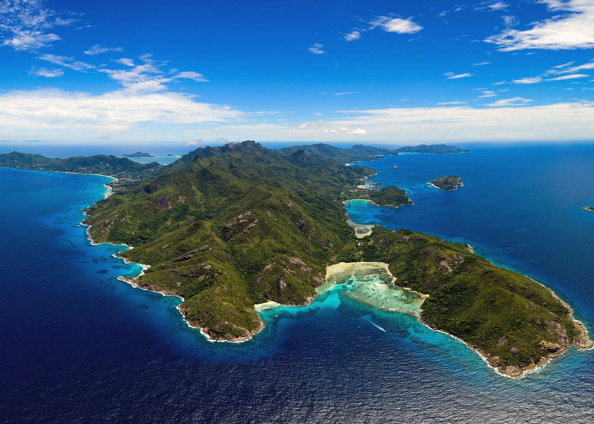
Mahé Island, the largest in Seychelles, boasts lush mountains, stunning beaches, and vibrant coral reefs. Home to the capital, Victoria, it offers a blend of Creole culture, tropical rainforests, and diverse marine life, making it a key hub for tourism and nature exploration in the Indian Ocean.
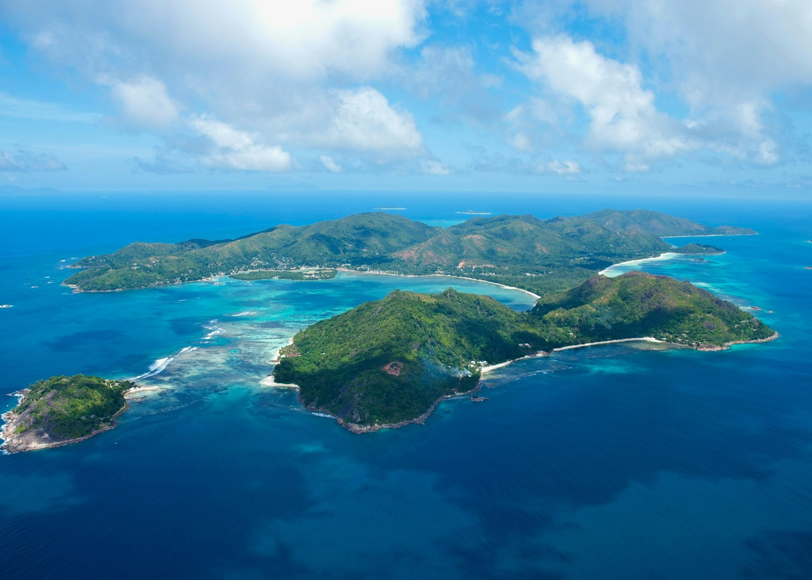
Praslin Island, Seychelles' second-largest, is renowned for its white-sand beaches, crystal-clear waters, and the UNESCO-listed Vallée de Mai nature reserve. It's home to the rare coco de mer palm and vibrant marine life, offering a serene tropical escape with a mix of nature and luxury resorts.
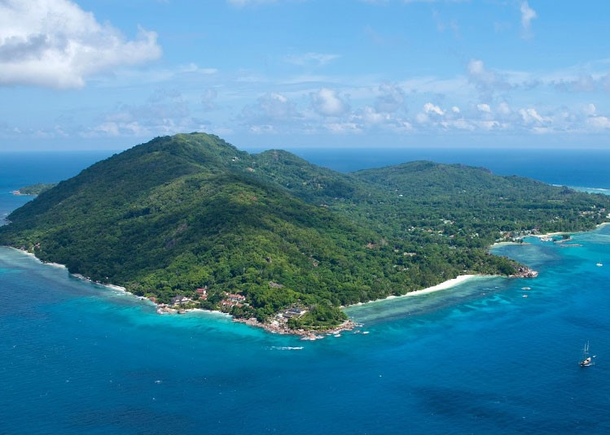
La Digue, a tranquil island in Seychelles, is known for its stunning beaches like Anse Source d'Argent, crystal-clear waters, and granite rock formations. With a laid-back vibe, it offers scenic cycling routes, lush nature, and rare wildlife, making it a favorite for eco-tourism and relaxation.
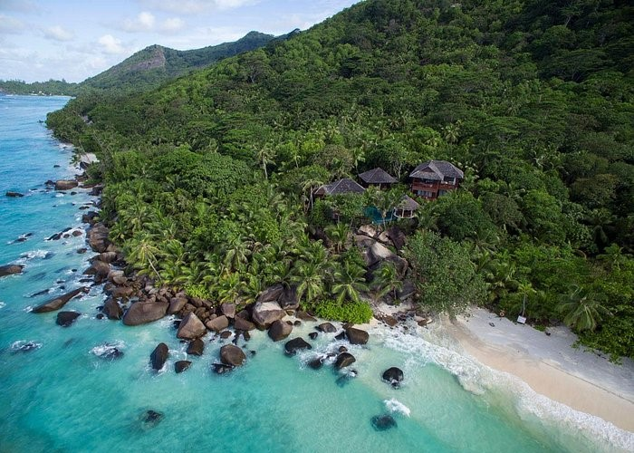
Silhouette Island, Seychelles' third-largest, is a remote paradise known for its rugged mountains, dense rainforests, and pristine beaches. A biodiversity hotspot, it's home to rich wildlife, coral reefs, and hiking trails. With limited development, it offers a secluded, nature-focused experience ideal for eco-tourism.
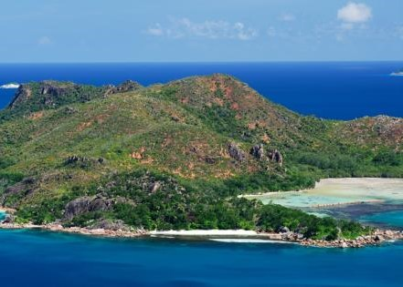
Curieuse Island, located near Praslin in Seychelles, is a protected marine park known for its giant Aldabra tortoises, red earth, and diverse mangrove forests. Famous for conservation efforts, it offers scenic trails, stunning beaches, and unique wildlife, including the coco de mer palm, making it a nature lover's haven.
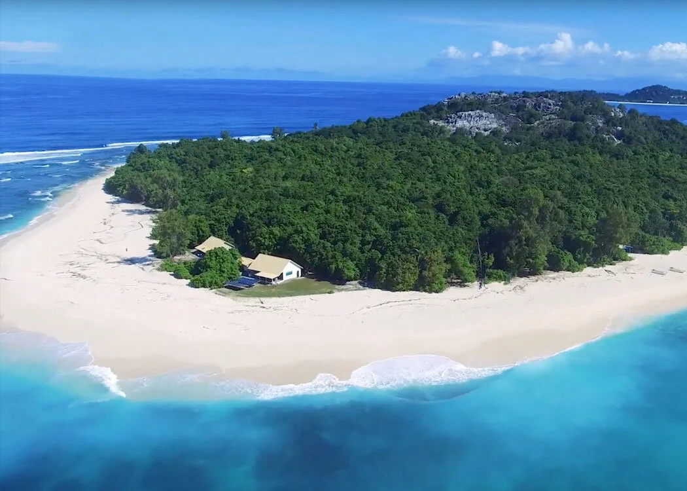
Cousin Island, a small granitic island in Seychelles, is a protected nature reserve known for its rich biodiversity and birdlife. It is home to endangered species like the Seychelles warbler and various seabirds. With its thriving coral reefs, it’s a key destination for conservation and eco-tourism.
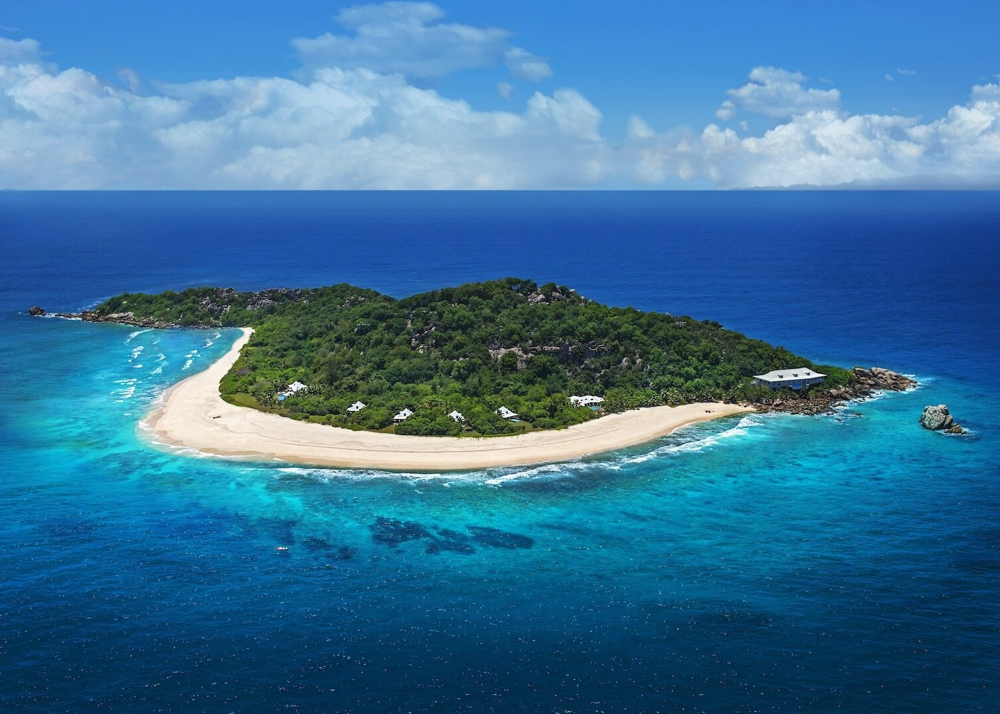
Cousine Island, a private island in Seychelles, is a pristine sanctuary focused on conservation and luxury eco-tourism. Known for its lush vegetation, white-sand beaches, and diverse wildlife, it hosts rare species like the Seychelles magpie-robin and hawksbill turtles. Its exclusivity offers a serene, nature-rich escape.
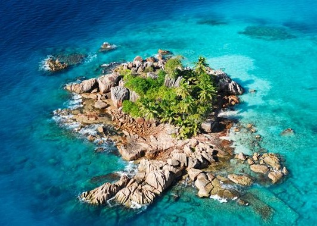
Cocos Island, near La Digue in Seychelles, is a small granite islet famed for its stunning underwater scenery. Surrounded by crystal-clear waters and vibrant coral reefs, it's a popular spot for snorkeling and diving, offering abundant marine life, including colorful fish and sea turtles.
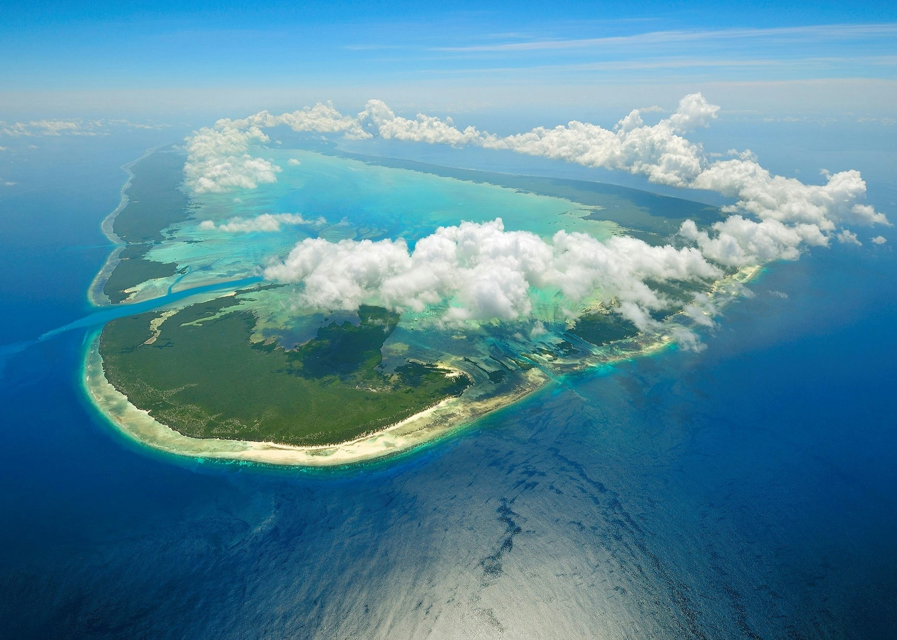
Aldabra, the world’s second-largest coral atoll, is a UNESCO World Heritage site in Seychelles. It is renowned for its remote, untouched ecosystem, home to the largest population of giant Aldabra tortoises and diverse marine life. Its isolation preserves rare species, making it a key global conservation site.
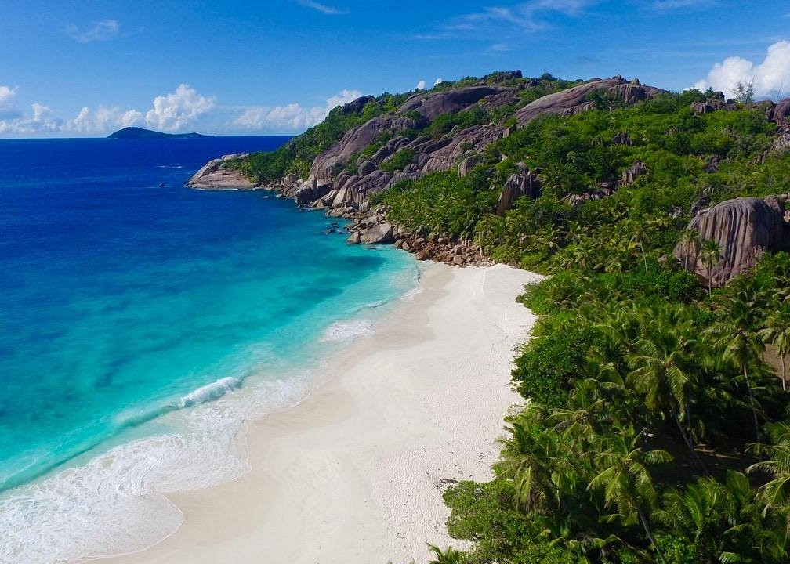
Grande Soeur, a privately-owned island in Seychelles, is known for its stunning white-sand beaches, crystal-clear waters, and lush greenery. Offering a serene, exclusive experience, it’s popular for snorkeling, diving, and picnicking. With its natural beauty and limited development, it provides a tranquil tropical escape.
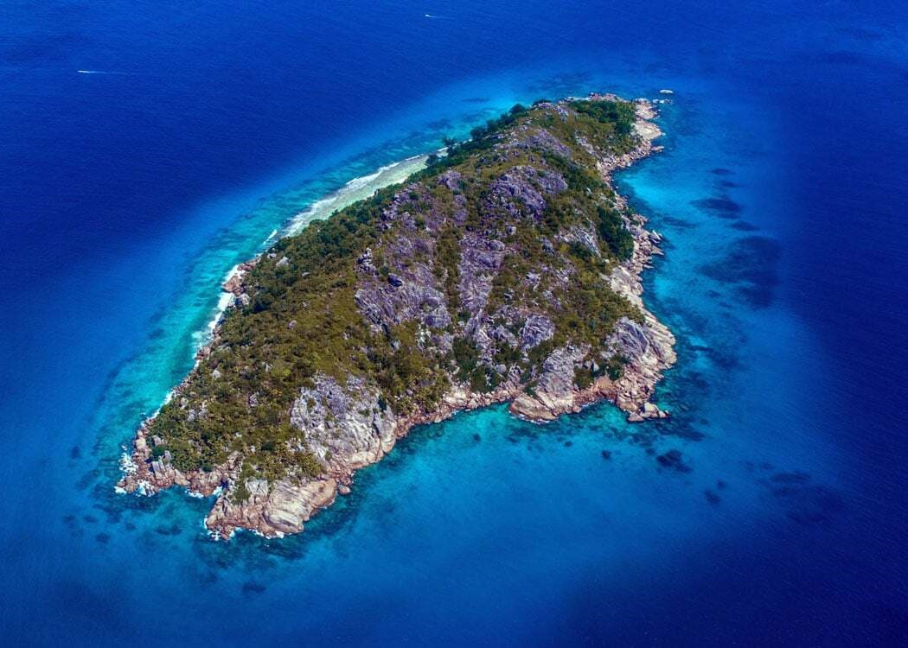
Petite Soeur, a small island adjacent to Grande Soeur in Seychelles, features pristine beaches and lush greenery. Known for its tranquility and natural beauty, it offers visitors opportunities for snorkeling, swimming, and secluded picnics. Its unspoiled environment makes it a perfect escape for nature lovers.